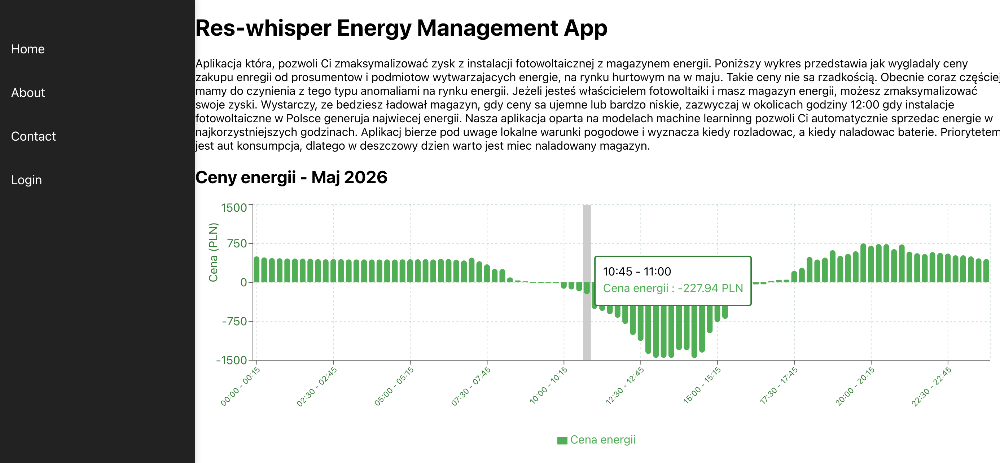
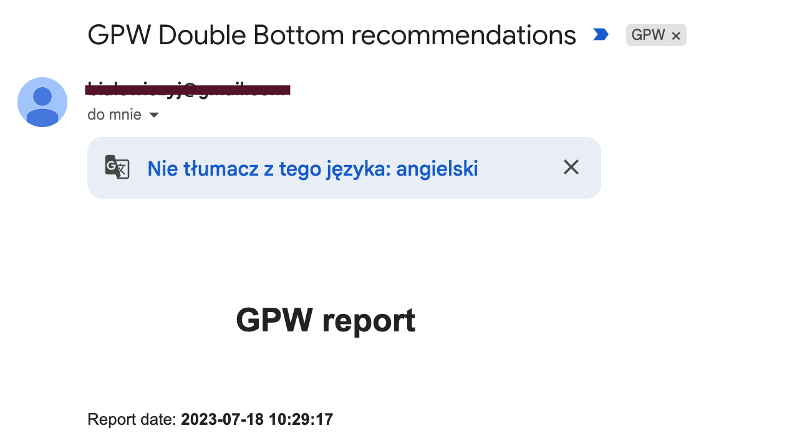
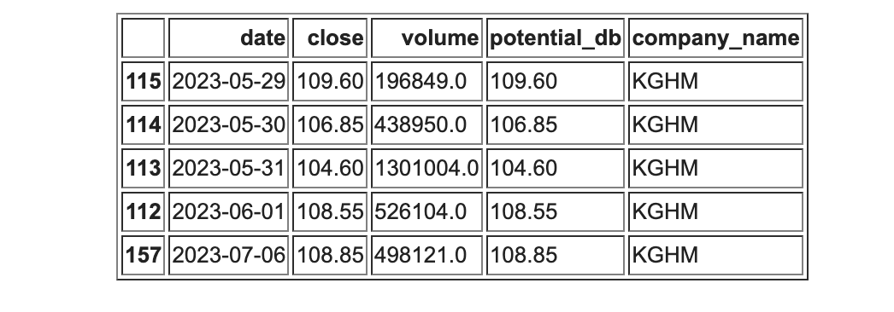

01
Data Engineering
Designing and implementing batch and streaming data processes, ETL pipelines, lakehouse architectures, data transformations and reliable data workflows.
I'm Albert Majcher, a Data Engineer with 10 years of experience in technology. My journey started with SEO and web development and gradually evolved into Data Engineering, Cloud, DevOps and AI.
A technical journey that moved from building websites to building the infrastructure behind data and AI.
I started my career working with SEO, websites and web technologies. That experience taught me how applications work from the ground up, how users interact with them, and how to build and maintain systems in production.
Over time, my interests shifted towards data and automation. I became fascinated by what happens behind the application layer: collecting data, transforming it, building reliable pipelines and making information useful.
Today, my main focus is Data Engineering, DevOps and AI. I work with modern cloud data platforms, build batch and streaming pipelines, automate infrastructure and deployment, and develop AI-powered applications.
Outside of my professional work, I like building my own projects. They are a way for me to experiment with new technologies, solve real problems and turn ideas into working software.
I enjoy working across the boundaries between data, infrastructure, software and AI.
Designing and implementing batch and streaming data processes, ETL pipelines, lakehouse architectures, data transformations and reliable data workflows.
Building CI/CD pipelines, infrastructure as code, cloud services, private networking and automated deployment workflows using Azure and modern DevOps tools.
Deploying machine learning models, tracking experiments and metrics, and building AI applications using MLflow, Databricks, Azure ML and OpenAI technologies.
Developing Python microservices and APIs, building automated tests, working with Docker and creating production-ready applications.
My career has gradually moved closer to the systems underneath modern applications.
I started with SEO, website creation and maintenance. This gave me my first experience with web technologies, hosting and production systems.
I moved into data engineering and began working with Python, SQL, Apache Spark and large-scale data processing.
As systems became more complex, I expanded into Azure, CI/CD, Docker, infrastructure as code, networking and automated testing.
More recently, I've been combining my data and software engineering experience with machine learning and generative AI.
Personal projects are where I experiment, learn and turn interesting ideas into working systems.

A system designed for users with small renewable energy installations such as photovoltaic panels and battery storage.
The application uses Polish energy-market prices, battery charging history and weather forecasts to help determine when energy should be stored and when it can be sold at a more favorable price.
Visit application →An energy-focused blog where the content is generated entirely by an AI model running locally.
The project is an experiment in using local language models to create and publish useful, domain-specific content without relying entirely on hosted AI services.
Visit blog →
A daily market-analysis project designed to identify potential double-bottom formations on the Polish stock market (GPW).
The system analyzes market data, generates a report and sends the results by email, making it possible to monitor potential setups without manually checking every stock.

Automated daily analysis →A practical stack built around Python, cloud platforms, distributed data processing and automation.
Good engineering is not only about writing code. It's about building systems that are reliable, automated and useful.
I prefer solutions that can be tested, deployed, monitored and maintained rather than prototypes that only work once.
That's why I care about automation, testing, infrastructure as code and CI/CD just as much as the application itself.
And when I see an interesting problem, I usually end up building something to explore it.